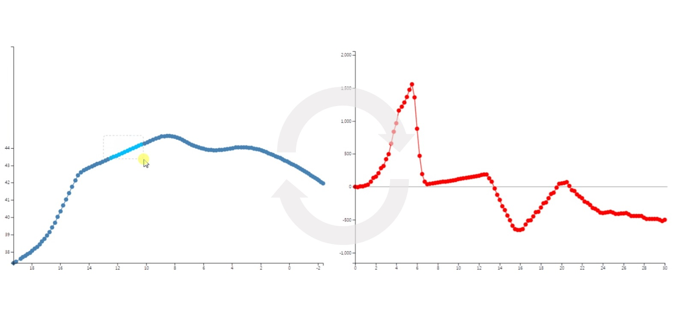
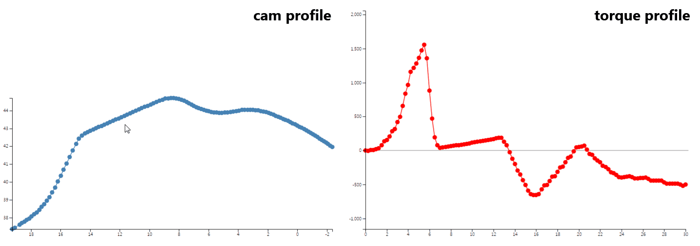
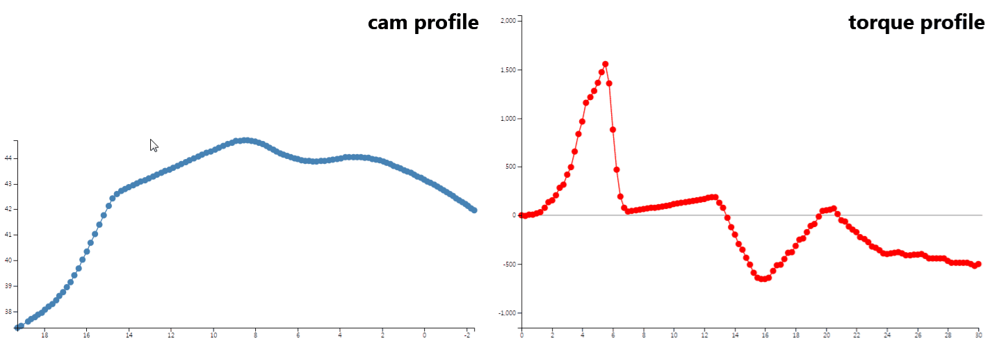

Interactive Torque Designer
Dynamic analysis through graphic interaction

My role: dynamic analysis, application development
Advisor: Geonhee Lee, Wangi Park, Junwon Seo, Yongsoo Kyong
Hinge dynamic analysis is an important part of developing a digital oven. Conventional simulation software needs a complicated process and cannot work in reverse, from a desired hinge profile back to the torque that produces it. Interactive Torque Designer solves both problems with a web application that runs the dynamic analysis and lets engineers design by editing graphs directly.

A web application is universal and easy to extend. Anyone can use it with only a browser, and new functions need only simple programming. Plots built with d3.js show the dynamic analysis results graphically. Engineers get a torque profile by editing the visualized cam profile, and the reverse.

Feedback from field engineers across design iterations added multi-point drag and other functions that eased the design process. With the final version, engineers analyze torque intuitively and run inverse design, which greatly simplifies the mechanical design of a digital oven. The graphs also help engineers explain mechanical behavior to members of other divisions.